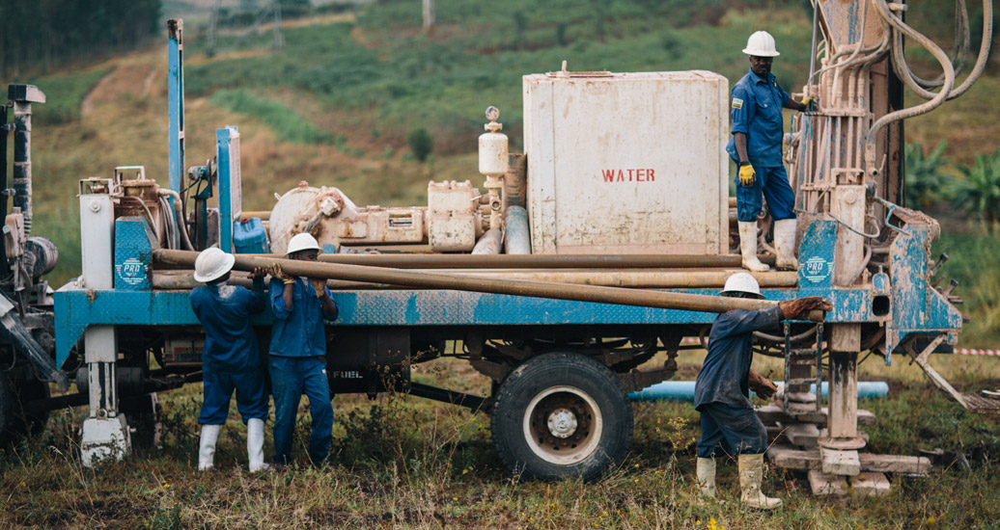

what is the goal?
The purpose of the 10 days is two fold:
why water?
Helping communities create sustainable water, sanitation, hygiene, and Christian witness programs in partnership with local churches is just the best way we've found to do that. Why? Because the water crisis affects poverty, women, health and education—and for us it's a spiritual issue.
working in ruhango
The Ruhango District is located in the Southern Province of Rwanda. It’s about 242 square miles and is home to more than 300,000 people. All funds raised from the 10 Days go to funding Living Water International’s ongoing work in this area.

- 
PRIVACY POLICY | © Living Water Interational